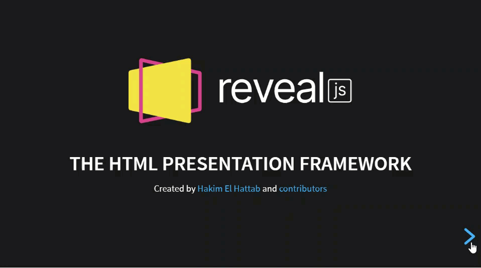

For Amazing HTML Presentation
Presentation created by: Simón Ovidio Miranda Chiri /ovidio.miranda@jalasoft.com
Agenda
Agenda
Agenda
Introduction
Introduction
Framework for creating presentations using HTML.
Introduction
It's open source, developed by the Hakim El Hattab.
Introduction
Presentations are responsive styling to the device on which they are viewed.

Installation
Installation
- 1. Download the latest reveal.js version.
- 2. Unzip and replace the example contents in index.html with your own.
- 3. Open index.html in a browser to view it.
https://github.com/hakimel/reveal.js/archive/master.zip
That's it 🚀.
index.html
Backgrounds
Slide Backgrounds
With data-background you can change the background color of a specific slide. All CSS colors are supported
Slide Backgrounds
Image Backgrounds
You can also change the background image of a slide.
Image Backgrounds
Video Backgrounds
Video Backgrounds
GIF Backgrounds
GIF Backgrounds
Background Transitions
You can override background transitions per-slide.
Background Transitions
Code
Pretty Code
Make sure that a syntax highlight theme is included in your document. We include Monokai by default.
Pretty Code
Pretty Code
public int getAverage(int[] marks) {
return (int) IntStream.of(marks).average().orElse(Double.NaN);
}
Code syntax highlighting courtesy of highlight.js.
public int getAverage(int[] marks) {
return (int) IntStream.of(marks).average().orElse(Double.NaN);
}
Pretty Code
public Boolean validate(String eanCode) {
String twelveDigits = eanCode.substring(0, eanCode.length() - 1);
int result = Stream.of(twelveDigits.split(""))
.mapToInt(Integer::parseInt)
.map(number -> number % TWO == 0 ? number : number * TREE)
.sum();
int calcChecksum = (result % TEN == 0) ? 0 : TEN - (result % TEN);
int lastNumber = Integer.parseInt(eanCode.substring(eanCode.length() - 1));
return calcChecksum == lastNumber;
}
Example code.
Fragments
Fragments
Hit the next arrow...
... to step through ...
... a fragmented slide.
Fragments
Example:
Fragment 1
Fragment 2
Fragment 3
Fragment 1
Fragment 2
Fragment 3
Fragment Styles
There's different types of fragments, like:
grow
shrink
strike
grow
shrink
strike
Fragment Styles
fade-right
fade-up
fade-down
fade-left
fade-right
fade-up
fade-down
fade-left
Fragment Styles
Fade in
Fade out
Fade in, then out
Fade in, then semi out
Fade in
Fade out
Fade in, then out
Fade in, then semi out
Fragment Styles
Highlight red
Highlight green
Highlight blue
Highlight red
Highlight green
Highlight blue
Lists
Unordered List
- Coffee
- Tea
- Milk
- Coffee
- Tea
- Milk
Ordered List
- HTML
- Java
- JavaScript
- SQL
- HTML
- Java
- JavaScript
- SQL
Description Lists
- Bread
- A baked food made of flour.
- Coffee
- A drink made from roasted coffee beans.
- Bread
- A baked food made of flour.
- Coffee
- A drink made from roasted coffee beans.
A Nested List
- Coffee
- Tea
- Black tea
- Milk
- Coffee
- Tea
- Black tea
- Milk
Tables
Item
Value
Quantity
Apples
$1
7
Lemonade
$2
18
| Item | Value | Quantity |
|---|---|---|
| Apples | $1 | 7 |
| Lemonade | $2 | 18 |
Clever Quotes
“Checkstyle is a development tool to help programmers write Java code that adheres to a coding standard.”
“Checkstyle is a development tool to help programmers write Java code that adheres to a coding standard.”
Customization
Themes
Reveal.js comes with a few themes built in:
Black (default) - Beige - Blood - League - Moon - Night - Serif - Sky - Simple - Sky - Solarized - WhiteTransitions Styles
You can select from different transitions, like:
None -
Fade -
Slide -
Convex -
Concave -
Zoom
transition: 'convex', // none/fade/slide/convex/concave/zoom.Features
Vertical Slides
Slides can be nested inside of each other.
Horizontal Slide
Level 1
Level 2
Level 1
Nested slides are useful for adding additional detail underneath a high level horizontal slide.
Level 2
That's it, time to go back up.
Pdf Export
Export to Pdf
- Open the presentation with Google Chrome adding
?print-pdf - Open the in-browser print dialog (CTRL+P).
- Set the following settings.
https://ovidiomiranda.gitlab.io/reveal_js_presentation/?print-pdf
Export to Pdf
Separate Pages for Fragments
Reveal.initialize({ pdfSeparateFragments: false })